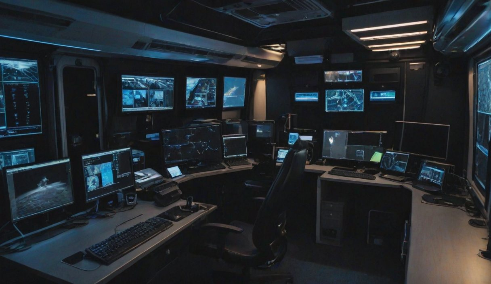

الشغلة
بفيلا تاجر التحف كونراد فالك في موزاييك عمره 1500 سنة: طاووس أفاميا. انسرق من سوريا من عشر سنين، واشتراه فالك من المهرّبين. الليلة منرجّعه.
دورك: العين
أنت بالفان برّا الفيلا. معك مخطط البيت، الكاميرات، الدليل الفني لكل جهاز، وملفات الطاقم.
شريكك اليد جوّا: بيشوف الأقفال والأجهزة قدامه، بس ما بيعرف كيف بتنفتح. وأنت ما بتشوف شو قدامه.
- خلّيه يوصّفلك كل جهاز: الماركة والرقم التسلسلي. الرقم التسلسلي بيفتحلك صفحة الجهاز بتبويب «الدليل».
- أغلب الأجوبة بدها شي من عنده وشي من عندك. دوّر بالملفات قبل ما تجاوبه.
- التاريخ الليلة مهم: السبت 14 آذار 2026، الأسبوع 11.
ملاحظاتك
مخطط فيلا فالكمن ملف البلدية. الرسمات على الأدراج متل ما هي على أبوابها.
كاميرات الفيلاعم تسحب الصورة من خط شركة الأمن. تلات كاميرات بس واصلين لعندك.
دارات الكاميرات
الدارة أ (بتمرق بعلبة التوصيل يلي بالقبو): CAM 1 الممر، CAM 2 قاعة الموزاييك، CAM 3 درج الشمس، CAM 4 درج المرساة. إذا انقطعت كابلات العلبة صح، هالأربعة بيصيروا يعيدوا آخر دقيقة.
الدارة ب (مستقلة، ما منطولها): CAM 5 درج الشجرة، CAM 6 البوابة والمرآب. بيضلّوا عالمباشر طول الليل.
الدليل الفنيكل صفحة بتفتح بالرقم التسلسلي للجهاز. اليد بيقراه عن الجهاز نفسه.
رمز الخدمة
الرمز أربع خانات:
1. أول خانتين: رقم الأسبوع الحالي من السنة.
2. تاني خانتين: مجموع أرقام «رقم الفني» المكتوب على ملصق الباب.
«آخر صيانة» المكتوبة على الملصق ما إلها علاقة بالرمز.
تحويل الكاميرات لتسجيل مكرّر
اقطعوا تلات كابلات بهالترتيب. «يمين» و«يسار» متل ما بيشوفهن يلي واقف قدام العلبة.
1. إذا آخر رقم بالرقم التسلسلي فردي: ابدؤوا بالكابل يلي عليه أول حرف من اسم حارس المناوبة هلق (بالأحرف اللاتينية). إذا زوجي: بالكابل B.
2. بعدين الكابل يلي على يمينه مباشرة. إلا إذا كان أبيض: وقتها يلي على يساره.
3. آخر شي: إذا ضو LINK عم يرفّ: الأسود. إذا ثابت: الأصفر.
أرضية حسّاسة للضغط
خمس صفوف بخمس أعمدة. على كل بلاطة رمز محفور.
البلاطات الآمنة هي بس يلي عليها رمز من رموز شعار عيلة المالك. أي بلاطة تانية بتشغّل الإنذار.
المشي للأمام أو للجنب، بلاطة بلاطة. ممنوع بالورب، وممنوع النط فوق بلاطة.
خزنة بقرص واحد
القرص عليه أرقام من 00 لـ 99. التوليفة تلات أرقام، كل رقم خانتين.
ما في توليفة مصنع: المالك بيختار أرقامه بنفسه. دوّروا بملفه.
طاووس أفاميا
موزاييك أرضي، القرن الخامس. المصدر: «مجموعة خاصة» (يعني: بلا أوراق).
الوزن مع الإطار: 3.75 كغ.
قاعدة العرض فيها حسّاس وزن بيتحمّل فرق 40 غرام بالزايد أو بالناقص. فتحة القاعدة بتساع تلات أكياس بالضبط: لا أكتر ولا أقل.
ملفات أهل الفيلاجمعهن أبو النور على مدى شهرين.
كونراد فالك
اشترى «طاووس أفاميا» سنة 2015 من وسيط، بلا أي أوراق.
شعار عيلته، وبيحطه على كل شي بيملكه: نجمة فوق برج، وفوقهن تاج (★ ♜ ♛).
متزوج من إنغريد. بيكرر بكل مقابلة إنو يوم عرسه «أهم يوم بحياته».
من مقابلة مع مجلة: «أرقام خزنتي؟ من أهم يوم بحياتي طبعاً. بس بكتبهن بالمقلوب: السنة أول شي، بعدين الشهر، بعدين اليوم. الحرامية ما بيفكروا بالمقلوب.»
بيحب يخته أكتر من سيارته، وحاطط مجسّم إله على رف المكتب.
كارستن
مناوبته الليلة من 22:00 للـ 06:00. دقيق متل الساعة: ما بيتأخر دقيقة وما بيستعجل دقيقة.
دورته
دوامها اليوم من 14:00 للـ 22:00. خلّصت وروّحت قبل ما توصلوا.
ينس
بيترك الزورق المطاطي مفوّل وجاهز ببيت القوارب صيف شتا.
باب بيت القوارب عليه قفل بكلمة من أحرف. فالك غيّرها لـاسم يخته، والاسم مكتوب على لوحة نحاس على مجسّم اليخت يلي بمكتبه.
المناوبات
| اليوم | 14:00 – 22:00 | 22:00 – 06:00 |
|---|---|---|
| الخميس | Dorthe | Mikkel |
| الجمعة | Carsten | Mikkel |
| السبت | Dorthe | Carsten |
| الأحد | Mikkel | Dorthe |
دورية الليل
الحارس بيطلع من غرفة المراقبة كل عشرين دقيقة: 01:50، 02:10، 02:30، 02:50…
بيمرق عالأدراج بهالترتيب: الشمس ← المرساة ← الشجرة. كل درج بياخد منه أربع دقايق بالضبط، وبعدين بيرجع عالغرفة.